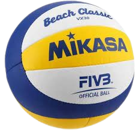

beach-volley
Qu'est ce que c'est ?
Le Beach-Volley est un sport collectif mettant face à face 2 équipes
composées de 2 joueurs qui sont séparés par un filet.
Le jeu se déroule de la manière suivante, l'équipe A effectue un
service en dehors du terrain puis l'équipe adverse doit effectuer un
échange avant de renvoyer la balle. L'échange se compose
généralement d'une réception - passe - attaque, il est tout à fait
possible d'effectuer un renvoie direct.

A savoir, il existe des variantes de beach-volley avec 3 voir 4 joueurs par équipes ce qui rend ce sport plus attrayant et plus facile pour le public lors d'évènements